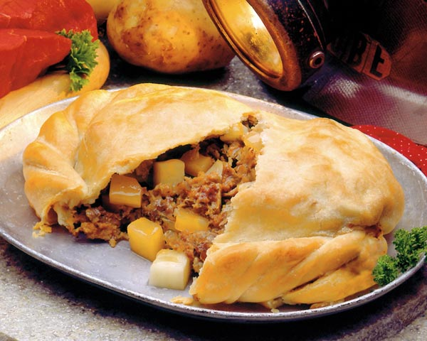

Pasties

Dough Ingredients
- 4 cups flour
- 1-1/2 tsp. salt
- 1-1/3 cups shortening
- 1 cup cold water
Stir flour and salt together. Cut in shortening until mixture resembles small crumbs. Stir in cold water until dough clings together. Knead lightly. Divide into 12 balls of dough. Set aside.
Filling Ingredients
- 2 sliced potatoes
- 2 sliced onions
- 2 pounds ground beef
- margarine, horseradish, and garlic as desired
Place filling ingredients on two plates, making 12 piles of ingredients, one for each pasty.
Roll ball of dough until about 6 inches by 12 inches. Cover half of rolled crust with ground beef, potatoes, and onion. Sprinkle lightly with salt and pepper. Top with dots of butter. If desired, top with horseradish and/or garlic. Fold other half of crust over filling and fold edges firmly together. Place 6 pasties on ungreased cookie sheet.
Cook 1 hour at 350 degrees.